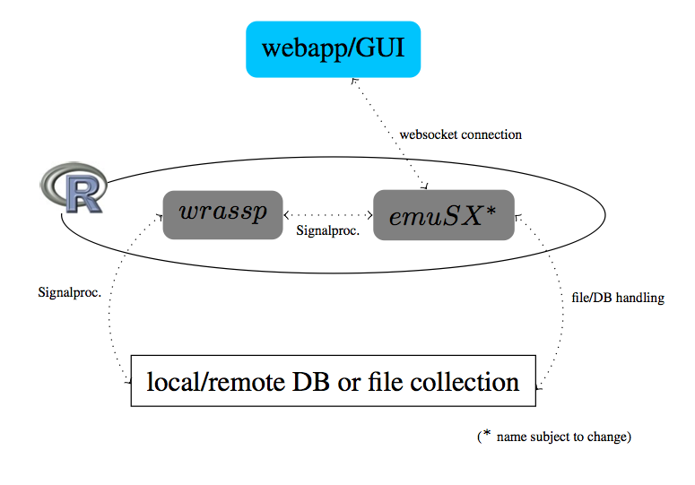

Welcome to our Github projects
This is an overview page of the GitHub projects of the Institute Of Phonetics And Spreech Processing of the University of Munich. Please follow the links to the demos and to GitHub to find out more about each project.
Current Projects
Future System Architecture:

TODO: Note about future structure of project/ future plans
TODO: Description
TODO: Installation instructions
wrassp
- TODO descr.
- TODO link GitHub Project page
EMU-Rpackage
- TODO descr.
- TODO link GitHub Project page
EMU-webApp
- TODO descr.
- TODO link GitHub Project page
Currently no other projects available